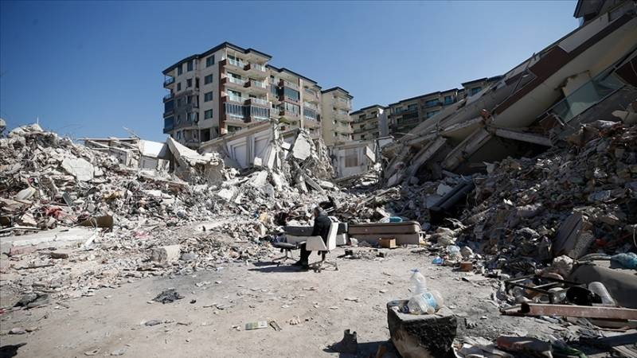

Deprem Nedir?

Deprem, yer kabuğundaki fay hatlarında meydana gelen ani kırılmalar sonucu oluşan titreşimlerdir. Yüzeyde sarsıntı olarak hissedilir ve can/mal kaybına neden olabilir.
📌 Türkiye, fay hatları üzerinde bulunduğu için deprem riski yüksek bir ülkedir.
Deprem Öncesinde Ne Yapmalıyım?
- Acil durum çantası hazırlayın (su, ilk yardım, el feneri, yedek kıyafet, düdük vs.).
- Evinizdeki ağır eşyaları duvara sabitleyin.
- Toplanma alanınızı önceden öğrenin ve ailenizle buluşma planı yapın.
- Gaz, su ve elektriğin nasıl kapatılacağını öğrenin.
📌 Acil bir durumda hızlı ve doğru kararlar almak için önceden hazırlıklı olun.
Deprem Anında Ne Yapmalıyım?
- 🏠 İçerideyseniz: "Çök – Kapan – Tutun" yöntemini uygulayın. Sabit ve sağlam bir eşyanın yanına çökerek korunmaya çalışın.
- 🚗 Araçtaysanız: Aracı durdurun, içeride bekleyin. Köprü, tünel altından uzak durun.
- 🌳 Açık alandaysanız: Ağaç, bina, elektrik direği gibi nesnelerden uzak durun.
📵 Asansör kullanmayın, camlardan uzak durun.
Deprem Sonrasında Ne Yapmalıyım?
- Sakin olun ve panik yapmayın.
- Gaz sızıntısı riskine karşı elektrik düğmelerine basmayın, kibrit çakmayın.
- Binanızda hasar varsa derhal terk edin, toplanma alanına gidin.
- Radyo ve yetkililerin duyurularını takip edin.
📍 En yakın toplanma alanı bilgisine Toplanma Alanları sayfasından ulaşabilirsiniz.
Afetzedeler İçin Öneriler
- Yaralı iseniz yardım isteyin veya düdük, ses gibi sinyallerle konumunuzu belli edin.
- Yetkililere doğru bilgi vererek yardım sürecine destek olun.
- Psikolojik destek alın, yalnız olmadığınızı unutmayın.
🧠 Depremin ardından travma normaldir. Gerekirse bir uzmandan psikolojik destek alın.